最近食べたものを覚える
麺・ごはん、肉・魚、和・洋・中。続かないように、ほどよく巡る3日分を提案します。
一昨日パスタなら、今日はごはんもの。
ふたり暮らし・ひとり暮らしの夜ごはんアプリ
最近食べたもの、ふたりの「また食べたい」、料理の腕前まで覚えて、次の買い物までの夜ごはんを。
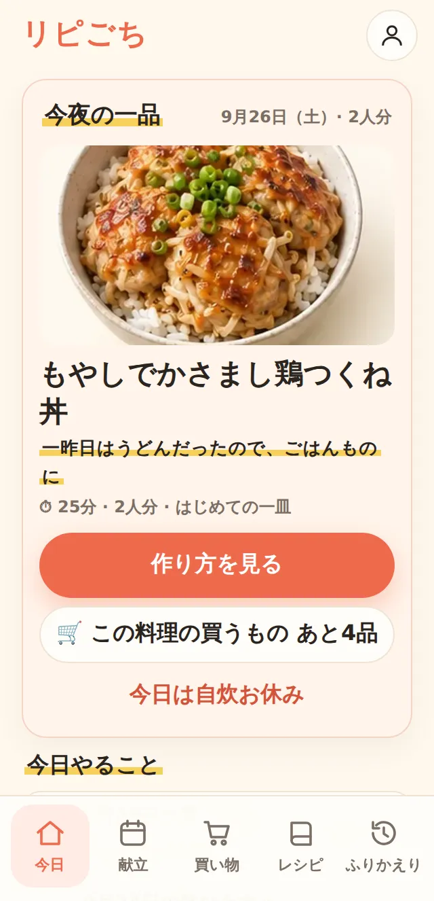

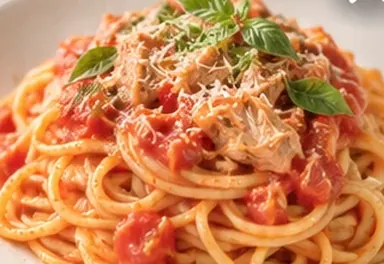
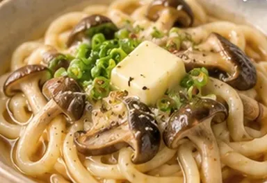
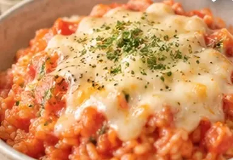
麺・ごはん・丼、和・洋・中。
いろいろ巡って、飽きない一週間に。写真はイメージです
よくある夜のおはなし
平日の19時。仕事帰りのスーパーで、スマホを片手に立ち止まる。
「今日なに食べたい？」と送ってみても、返ってくるのは「なんでもいい」。
迷った末に、いつもの材料をかごへ。急いで作って、テーブルに出したとたん――
「え、それおとといも食べたよ。」
悪気のない、ひと言。でも、ちょっとだけ、しゅんとする。
ほんとうは、「おいしい！」って顔が見たかっただけなのに。
何をいつ食べたかなんて、忙しい毎日で覚えていなくていい。
それは、リピごちが覚えておきます。
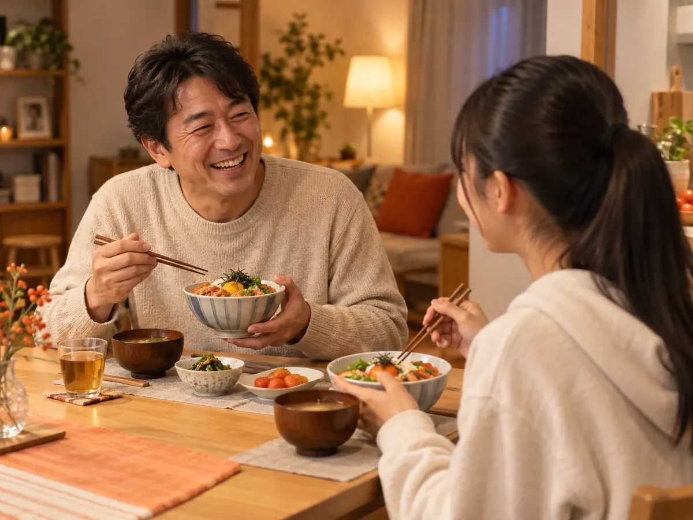
リピごちが覚えること
麺・ごはん、肉・魚、和・洋・中。続かないように、ほどよく巡る3日分を提案します。
一昨日パスタなら、今日はごはんもの。
食べたら、ひとりずつワンタップで気持ちを残すだけ。ふたりとも好きな一皿が、上位にきます。
好みの違いも、ごちそうに。
「毎週でも」「月に一度くらい」。好きな料理は、飽きる前、恋しくなった頃にまた登場します。
久しぶりの、あの味。
どれも、いまのβ版で無料で使えます。
つかいかた
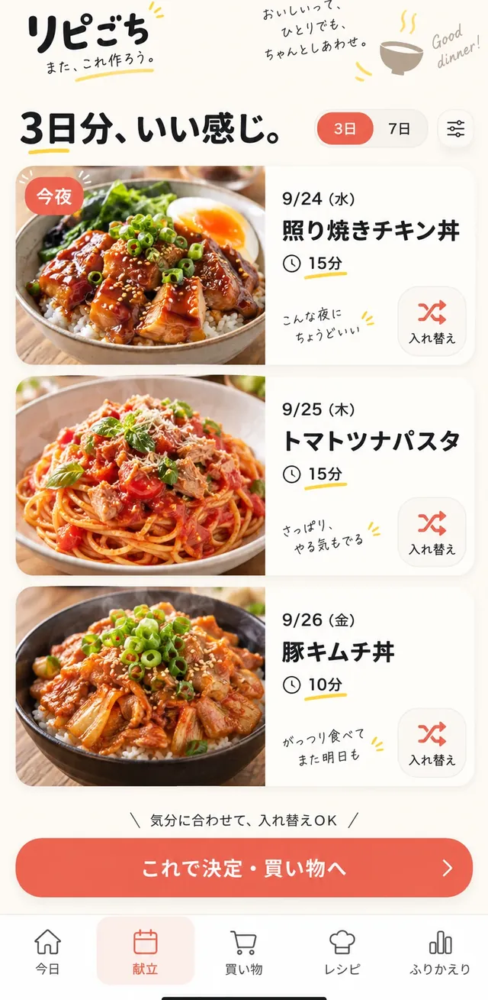
「3日ずつ」「1週間」「平日だけ」から選ぶだけ。人数・調理時間・苦手な食材・料理の腕前に合わせて、次の買い物までの献立を提案します。気分じゃなければ、ワンタップで入れ替え。
腕前は、1分の診断で。
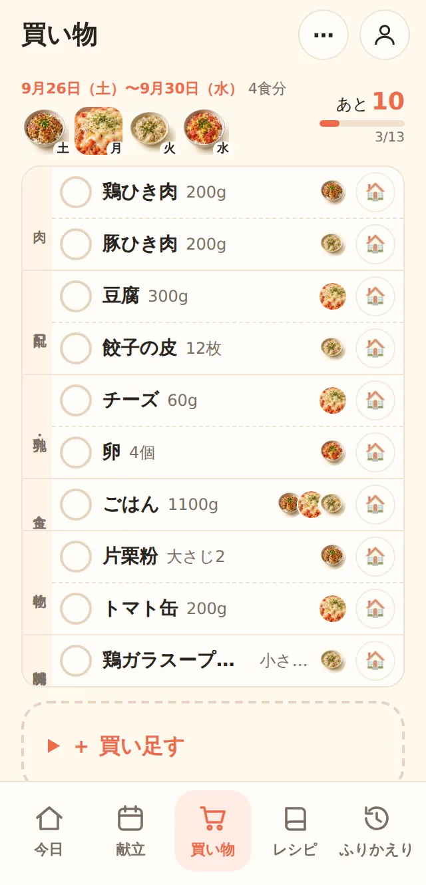
献立の材料だけを、スーパーを回る順に1行ずつ。どの料理に使うかは小さな写真でひと目で。家にある常備品はよけて、全部そろったら「買い物完了」。
LINEで送って、おつかいも
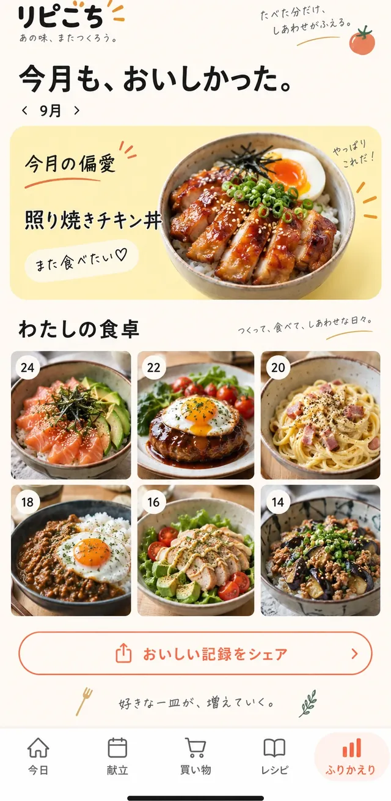
ひとりずつワンタップ。記録がたまるほど、次の献立がふたりの好みに近づきます。月ごとの「偏愛の一皿」も。
好きな一皿が、増えていく。
ふたりで使う
献立・レシピ・買い物リストが、もうひとりのスマホにも。アカウント登録はいりません。
見るだけの家族も、気軽に。
食べたい料理や「この日を変えたい」を、ワンタップでリクエスト。買い物の前なら、献立に入ります。
「なんでもいい」から卒業。
「◯日に買い物に行く予定。変更のリクエストはそれまでに！」を、そのままLINEへ。
締め切りがあると、決めやすい。
レシピ
YouTube・TikTok・Instagramで見つけたレシピは、リンクをコピーして📋ボタンでそのまま保存（Androidは共有メニューからも）。説明文から、材料・作り方・何人分かを読み取ります。保存したレシピも、かぶらないように献立に入ります。
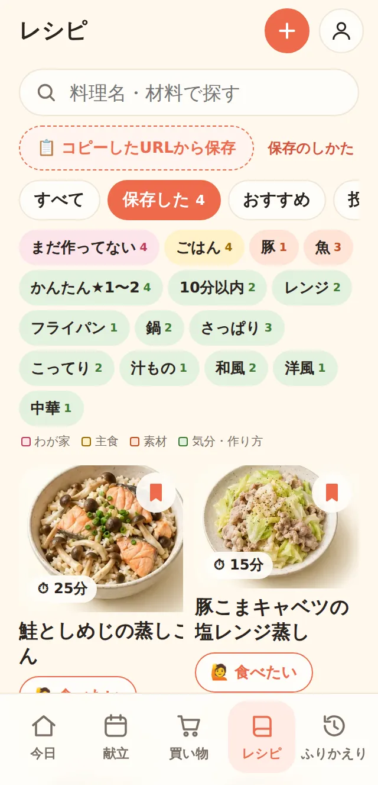
公開のお知らせ
正式版の公開日や、ふたり向けの新機能ができたら、メールでお届けします。
1分診断
料理写真をスワイプして、二択に答えるだけ。8種類のキャラクターから、あなたのタイプがわかります。ふたりで診断して、好みの違いを楽しんでも。
診断してみる好みを楽しむ診断です。性格や健康状態の判定ではありません。
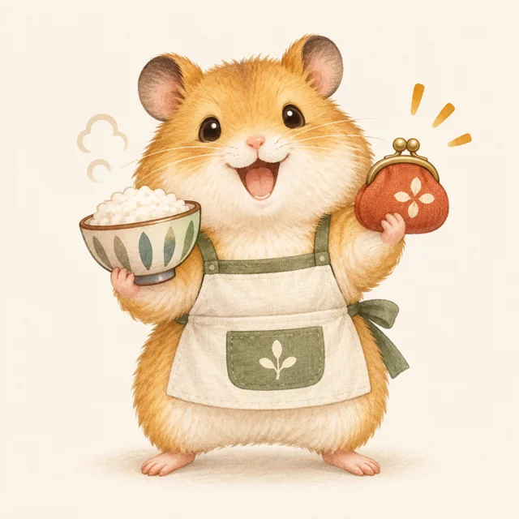
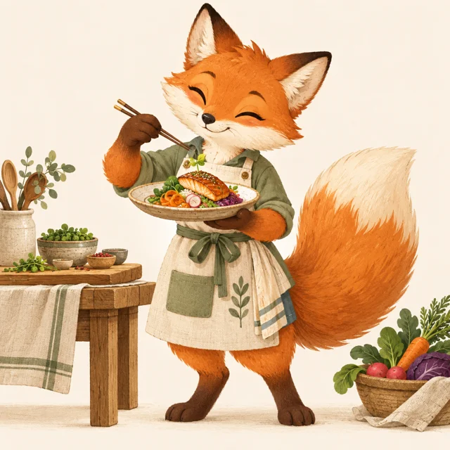
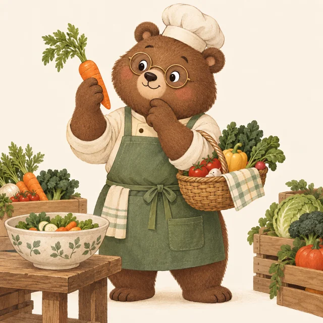
1分診断
レンジ丼から、からあげ・魚の三枚おろしまで。9品に「作れる？」と答えるだけで、★1〜5のランクがわかります。リピごちは、その腕前で作れる料理だけで献立を組みます。
診断してみる結果は「レンジ名人」から「台所マイスター」までの5タイプ。
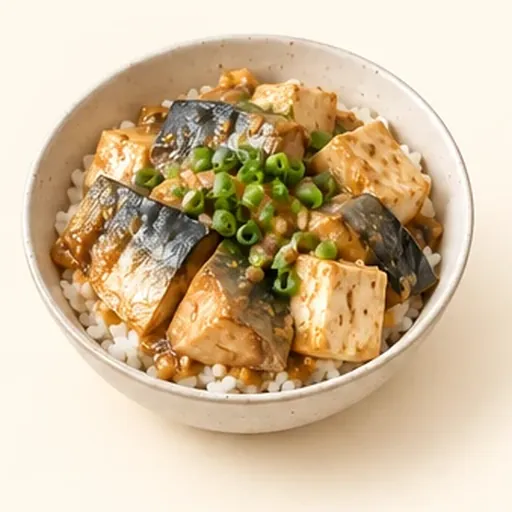
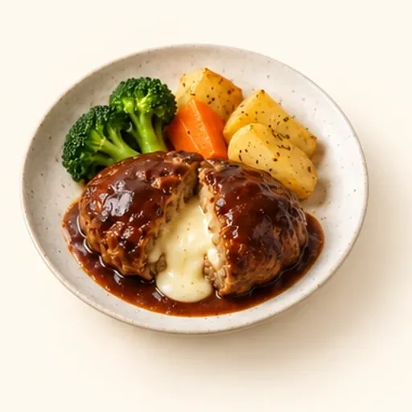
保存・記録・バックアップの基本機能は、この先もずっと無料。
アプリはメールもパスワードも不要。ブラウザで開けばすぐ使えます。
同期やAI取り込みを使ったときだけ、必要なデータをサーバーへ送ります。
より多くの提案レシピやAI取り込み枠などの有料プランを準備中です。始める前に必ずお知らせし、同意なく課金することはありません。
いまはβ版を無料で公開していて、ふたりで使うための機能を順次追加しています。正式版の公開日が決まったら、登録いただいたメールアドレスにいちばんにお知らせします。
まずはひとり暮らしと、ふたりの食卓（親子・カップル・夫婦など）に合わせて作っています。3〜4人の家族向けの機能も、その後に広げていく予定です。待機リストで人数を教えていただけると、開発の参考になります。
いまは全機能を無料で提供しています。保存・記録・バックアップの基本機能はこの先も無料です。有料プランは価格や内容が決まる前にお知らせし、自動で課金に切り替えることはありません。
YouTube・TikTok・Instagramで動画の「共有 → リンクをコピー」をして、リピごちのレシピ画面の「📋 コピーしたURLから保存」を押すだけです。Androidでホーム画面に追加している場合は、共有メニューに出る「リピごち」からも保存できます。説明文に材料が書かれていない動画は、スクショや手入力で補えます。
設定の「ふたりで使う」から招待リンクを作って、LINEなどで送るだけです。相手がリンクを開くと、献立・レシピ・買い物リストが同じになります。「見るだけ」で参加して、食べたいものをリクエストする使い方もできます。
食べられない食材を設定すると、その食材を含む料理は提案しません。ただし安全を保証するものではありません。市販品の原材料表示は必ずご自身で確認してください。
使えます。Safariで開いて、共有ボタンから「ホーム画面に追加」すると、アプリのように起動できます。
ご登録いただいたメールアドレスと人数は、リピごちの公開のお知らせと開発状況のご案内にだけ使います。Googleフォーム（Google LLC）で管理し、第三者に販売・提供することはありません。配信停止は、お届けするメールに記載の方法でいつでもできます。
基本はお使いの端末（ブラウザ）の中です。家族との同期やAI取り込みを使ったときは、対象のデータをサーバーへ送信します。機種変更に備えて、設定からバックアップを書き出せます。